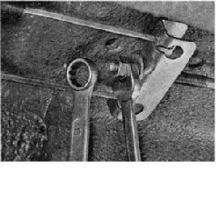

Тросы ручного стояночного тормоза снятие и установка
Необходимость в замене тросов стояночного тормоза возникает, если тросы в результате коррозии потеряли возможность перемещаться в оболочке, сильно вытанулись или имеют разрывы нитей. Совет При необходимости замены одного из тросов меняем и другой трос. Снятие 1. Подготавливаем автомобиль к выполнению работы. 2. Снимаем тормозные барабаны. 3. Снимаем защитный экран. 4. Ослабляем затяжку контргайки регулировочной гайки хода рычага стояночного тормоза и отворачиваем контргайку

11. Вынимаем трос из двух кронштейнов крепящих его к днищу кузова.
13. Выводим трос из отверстия опорного щита заднего тормозного механизма и снимаем его. 14. Аналогично снимаем второй трос. Установка 1. Устанавливаем трос в обратной последовательности. 2. После установки тормозных барабанов, регулируем ход рычага стояночного тормоза. |